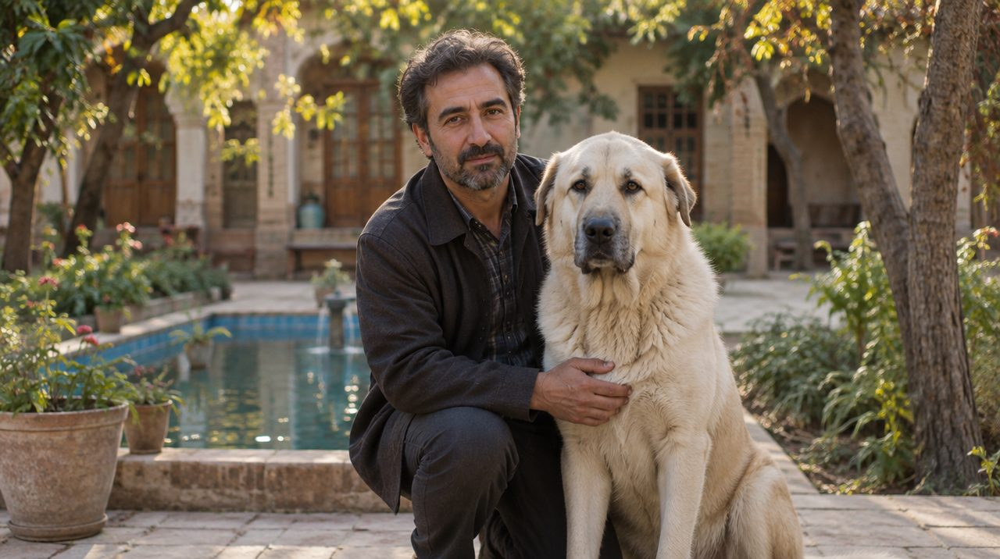
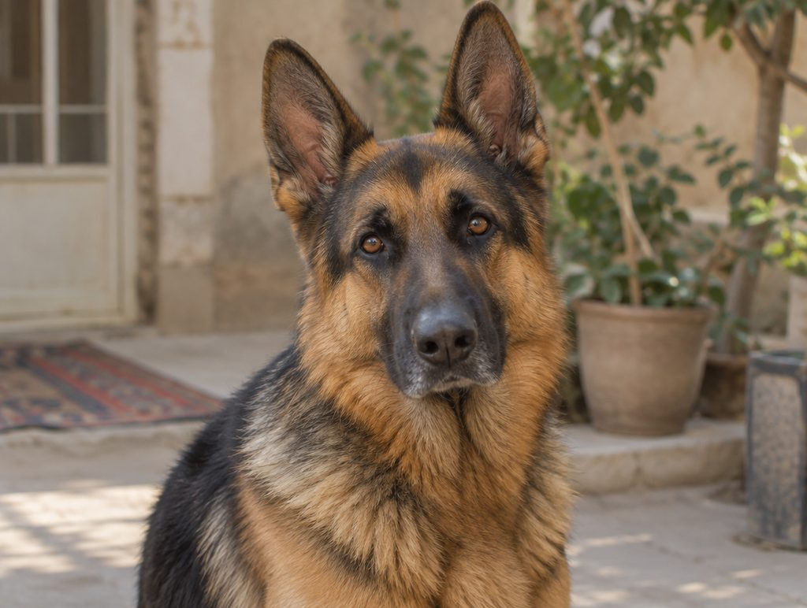

یک تصویر برای هر رکورد — ناحیه امن: سوژه در ۶۰٪ میانی

- همه قابها با
object-fit: coverوobject-position: 50% 40%برش میخورند؛ کمی بالاتر از مرکز تا سر و صورت حفظ شود. - هر چه بیرون از ۶۰٪ میانی باشد ممکن است در یکی از قابها حذف شود. در این عکس مرد و سگش در ۶۰٪ میانیاند؛ برای همین در قاب ۱:۱ هم هر دو دیده میشوند.
- رابط بارگذاری پیشنمایش همه قابها را نشان میدهد و متن جایگزین فارسی (
imageAltFa) اجباری است.
قابها — همان تصویر
۱۶:۹ · hero، سرصفحه مقاله و نژاد
۴:۳ ★ · کارت حیوان، آگهی
۳:۲ ★ · کارت مقاله و نژاد
۱:۱ · محصول فروشگاه
بندانگشتی و آواتار

thumb-lg · ۶۴


محروف اول ۴۰ (شخص)
تصویر ثبتنشده یا خطای بارگذاری · در حال بارگذاری · متن جایگزین بلند
سگ رکستصویر ثبت نشدهمرکز جامع درمانی، جراحی و تصویربرداری حیوانات خانگی و پرندگان زینتی دکتر صالحیدر حال بارگذاری — skeleton ۴:۳